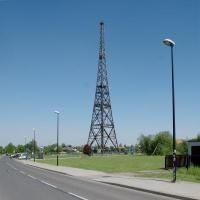
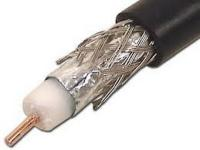
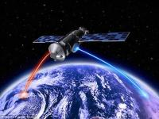

Wireless Communication
Australia has many remote outback areas, where some people live. Usually they are far away from the nearest town, and communication with other people is difficult. However, wireless communication is a big help to these people, as it gives them access to quick and easy communication with not only people in their area, but people around the world. Technology such as microwaves, optical fibres, and even satellites in space have all made global wireless communication possible.
 Many wireless signals can be transmitted over microwaves. These microwaves have the ability to carry multiple electrical signals at one time. A transmitter creates the microwaves, which are then received by a device that can receive them, and the device interprets them waves into the intended message. However, the microwaves have a limited distance, and as such, they need to have their signal strength increased through repetition. Repeater towers accept the microwaves coming to it, and transmit them again to increase the distance they can be sent, acting as relays for the microwaves. The repeater towers need to be within sight of each other, because microwaves travel in one straight direction, like light does. For this reason, repeater towers are usually built on a hill, to maximize the amount of microwaves they receive. Due to the limited line of sight of microwaves, they are not very practical for long distances, such as interstate or international communication.
 Coaxial cables can be used to transfer data as pulses of electricity, rather then electromagnetic waves. The signals are carried through thin conductive wires inside tubes, held in place by a plastic insulating disc. Most coaxial cables in Australia contain four, six or twelve cables. The cables are laid either underground or on the ocean floor. Coaxial cables are able to carry many more types of signals simultaneously, such as phone calls and television signals. The way they transfer signals make them more effective than microwaves for long distance communication, as there are no obstructions to the electric signals. However, the signals do need to be repeated like microwaves do. This ensures that the cable’s signal strength is always strong enough to reach it’s destination. Repeater stations are needed more frequently than microwave repeaters, however, which can limit their range. They can be used is a range similar to those of microwaves, due to their similarities in function.
 Optical fibre cables are currently the most efficient way of transmitting large quantities of signals
over long distances. Optical fibres are able to maintain 30,000 signals at once, because of the
way it transmits it’s information - light. This makes optical fibres extremely fast, as messages are
being transmitted at the speed of light. The light travels through the optical fibre, which can
manipulate the light to bend and change it’s direction. Using light for communication was not
feasible until 1958, with the invention of the laser. Laser is an acronym for “Light Amplification by
Stimulated Emission of Radiation”. Lasers produce intense light beams of a single colour, that
travel through these optical fibres for long distances. Light signals also need to be repeated
every 35-55km to maintain the light’s strength, as the glass in optical fibres absorbs some
energy from the light. Lasers lose energy slower then ordinary light, as lasers are focused and
spread out very little, unlike normal light. The cables are much smaller, lighter and more flexible
than traditional coaxial cables, making them a far superior vector is transmission than coaxial
cables.
Optical fibre cables are currently the most efficient way of transmitting large quantities of signals
over long distances. Optical fibres are able to maintain 30,000 signals at once, because of the
way it transmits it’s information - light. This makes optical fibres extremely fast, as messages are
being transmitted at the speed of light. The light travels through the optical fibre, which can
manipulate the light to bend and change it’s direction. Using light for communication was not
feasible until 1958, with the invention of the laser. Laser is an acronym for “Light Amplification by
Stimulated Emission of Radiation”. Lasers produce intense light beams of a single colour, that
travel through these optical fibres for long distances. Light signals also need to be repeated
every 35-55km to maintain the light’s strength, as the glass in optical fibres absorbs some
energy from the light. Lasers lose energy slower then ordinary light, as lasers are focused and
spread out very little, unlike normal light. The cables are much smaller, lighter and more flexible
than traditional coaxial cables, making them a far superior vector is transmission than coaxial
cables.
 Satellites orbiting the Earth allow for transmitting signals over intercontinental distances at the speed of light. They can be used to transmit radio, television or phone signals to remote areas. Signals are sent to satellites in geostationary orbit around the Earth. The signals are then sent to their intended destination, or to another satellite to send the signal over a longer distance. All the energy needed to transmit and amplify the signals comes from solar panels that use the light from the Sun to create energy. Geostationary satellites orbit the Earth once every 24 hours, so they maintain the same position above the Earth at all times. The satellite needs to be located around 36,000km above the equator to maintain the speed necessary for geostationary orbit. Tracking station on Earth use radio waves to monitor the satellites and keep them in geostationary orbit using small rocket on the satellite. GPS systems use satellites to track the position of a GPS-enabled device.
Wireless communication has come a very long way, to the point where we can transmit signals worldwide. Microwaves and coaxial cables are great for transmitting information in a relatively local range, while optical fibres and satellites are more optimal for longer distances. All of these technologies enable people from all over the world in remote areas communicate with each other easily and quickly.